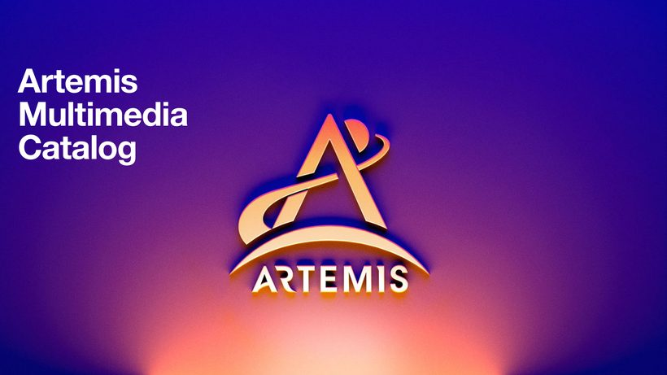
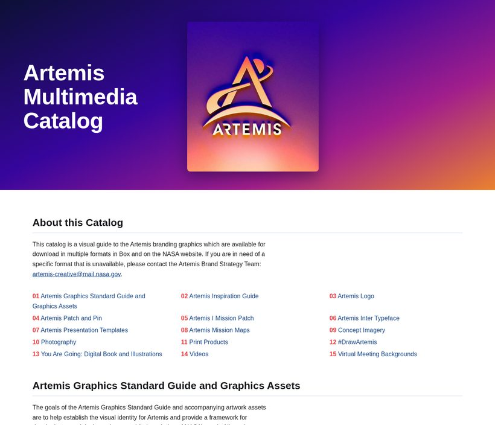
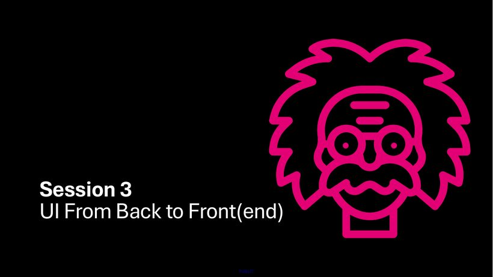
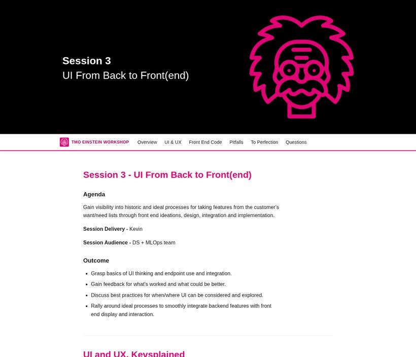

How it works
- 1 · Read the PDFText, tables, and page renders are extracted and inspected; scanned documents get OCR first.
- 2 · Carry images & paletteContent images are triaged from decorative artifacts and placed in reading order; dominant colors become CSS custom properties.
- 3 · Author semantic HTMLReal headings, tables, lists, and figures in the PDF's reading order — with base, mobile, and print CSS tiers. Optional sticky section nav.
- 4 · Verify the flowA comparison script aligns both documents word-by-word (column-aware) and iterates until the flow score passes, with every exclusion documented.
Examples
WWT Information Security Policy 2025
NASA Artemis Multimedia Catalog


TMO Einstein Workshop — Sessions Lineup

